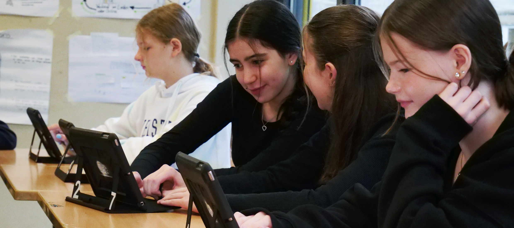

Durch den Einsatz von iPads im Unterricht der Oberstufe ist das NCG im 21. Jahrhundert angekommen.
Der Einsatz von iPads bringt viele Vorteile mit sich. Schülerinnen und Schüler müssen nicht mehr zahlreiche Arbeitsblätter, Hefte und Materialien transportieren, da alles digital gespeichert und bearbeitet werden kann.
Zusätzlich stellt die Schule 1 Terabyte Cloudspeicher zur Verfügung. Dadurch können Inhalte problemlos zwischen iPad, PC und Smartphone synchronisiert werden.
Über die iPads wird unter anderem ein digitales Klassennotizbuch geführt, an dem Schülerinnen und Schüler gemeinsam mit den Lehrkräften arbeiten können. Dieses eignet sich besonders gut für Gruppenarbeiten.
Lehrkräfte nutzen zudem ein digitales Klassenbuch, mit dem Anwesenheit, Fehlzeiten, Klassenarbeiten und Entschuldigungen dokumentiert und mit dem Sekretariat geteilt werden können.
Bei den Geräten handelt es sich um iPads der 8. Generation mit:
Zusätzlich erhält jede Schülerin und jeder Schüler einen Apple Pencil (1. Generation), wodurch handschriftliche Aufgaben einfach digital bearbeitet werden können.
Insgesamt wird das Projekt von den Schülerinnen und Schülern sehr positiv aufgenommen. Der Unterricht wird interaktiver, strukturierter und moderner gestaltet, wodurch die aktive Teilnahme deutlich erleichtert wird.
Für weitere Informationen zu den technischen Spezifikationen des iPads können Sie sich hier informieren.